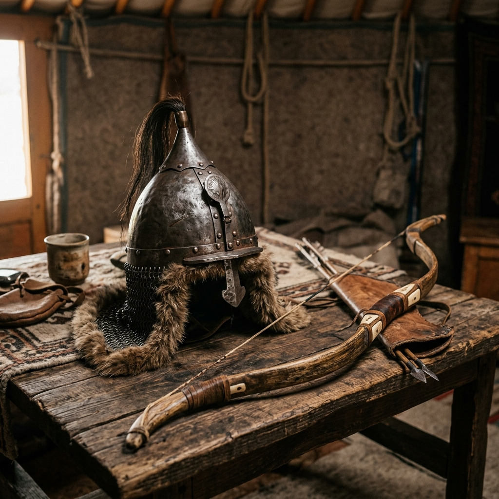

Battle of Amroha Explorer
Journey to the Rohilkhand plains of northern India. Discover the strategic military clash where the Delhi Sultanate forces routed the massive Mongol invasion, securing the borders of the sub-continent.
The Defense of Doab and Rohilkhand
During the early 14th century, the Delhi Sultanate under Alauddin Khalji faced persistent and devastating incursions from the Chagatai Khanate of Central Asia. In late 1305, a Mongol force of nearly 30,000 horsemen led by generals Ali Beg and Tartaq crossed the Indus River, bypassing border forts and marching deep into the fertile Doab region, plundering and burning towns.
Alauddin Khalji dispatched a large army of 30,000 cavalry under his generals Malik Kafur and Malik Nayak to intercept the invaders. On 20 December 1305, the opposing forces met on the plains near Amroha in present-day Uttar Pradesh.
🏛️ At a Glance
- Combatants: Delhi Sultanate vs. Chagatai Khanate (Mongols).
- Sultanate Commanders: Malik Kafur & Malik Nayak.
- Mongol Commanders: Ali Beg & Tartaq.
- Outcome: Decisive Delhi Sultanate victory.
Opposing Commanders at Amroha
The battle matched the highly structured, disciplined cavalry of Delhi against the legendary nomadic skirmishers of Central Asia.
Malik Kafur
The elite commander of Alauddin Khalji's forces, renowned for his strategic planning, disciplined formations, and iron military leadership.
Malik Nayak
A Hindu general of the Delhi Sultanate, holding the title of Muqti of Samana, who commanded a massive division of the vanguard cavalry.
Ali Beg & Tartaq
Mongol generals and descendants of Genghis Khan, leading a highly mobile force of horse archers accustomed to rapid encirclement tactics.
📈 Strategic Outcomes
- Decisive Defeat: The Mongol army is completely encircled and routed.
- Generals Captured: Ali Beg and Tartaq are captured alive and brought to Delhi.
- Border Security: Demonstrated the success of Alauddin's military reforms and fortification build-up.
- Deterrence: Severely reduced the frequency of Mongol incursions in northern India.
Securing the Northern Frontiers
The battle began with a series of coordinated skirmishes. Malik Kafur deployed a compact defensive line, absorbing the Mongol archers' arrows before launching a heavy, centralized cavalry charge led by Malik Nayak. The Sultanate forces successfully broke the Mongol wings, surrounding the central division and routing the invading force.
The victory at Amroha was a major turning point. By capturing the top Mongol generals, Alauddin Khalji sent a powerful message to the Chagatai Khanate. It validated his defensive reforms, including price controls, standing military wages, and the repairing of frontier outposts.
Campaign Timeline
Follow the campaign events of the late 1305 invasion.
Mongol Crossing
Chagatai forces under Ali Beg cross the Indus River, bypassing Multan and marching towards the Doab.
Sultanate Mobilization
Alauddin Khalji dispatches 30,000 elite horsemen under Malik Kafur and Malik Nayak to intercept the raiders.
The Battle of Amroha
Opposing armies clash near Amroha. Malik Kafur's tactical charge encircles and decimates the Mongol host.
Delhi Triumphs
Captured Mongol generals are presented at the royal court in Delhi, establishing a powerful border deterrent.
Relics of the Medieval Era
Explore the arms, armor, and battle plains that defined the 14th-century clash.

Amroha Battle Plains
The agricultural fields where the Sultanate and Mongol cavalry clashed.

Sultanate Cavalry Relics
Chainmail armor and steel helmet of the 14th-century standing army.

Mongol Horse Archer Gear
Recurve bow and steel cap of the nomadic Chagatai invaders.
📚 References & Further Reading
- Barani, Ziauddin (c. 1357 CE). Tarikh-i-Firuz Shahi (History of Firuz Shah).
- Khusrau, Amir (c. 1311 CE). Khaza'in ul-Futuh (The Treasures of Victories).
- Lal, K. S. (1950). History of the Khaljis (1290-1320). The Indian Press.
- Jackson, Peter (1999). The Delhi Sultanate: A Political and Military History. Cambridge University Press.